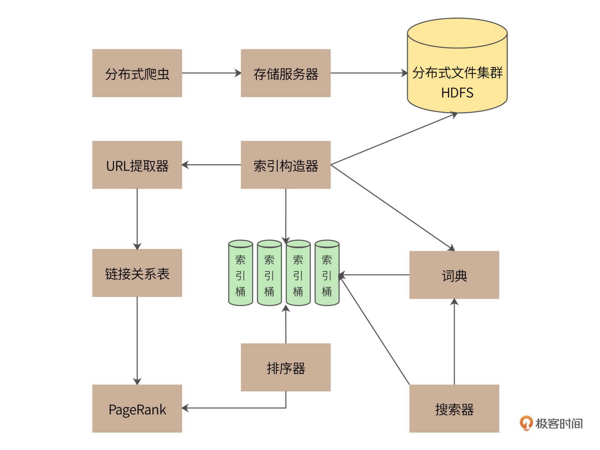
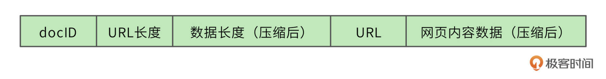
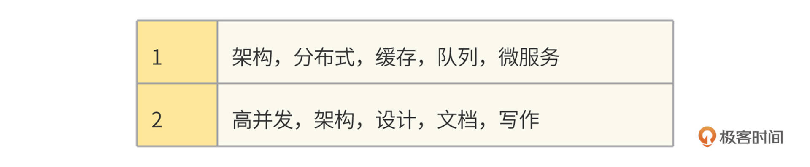
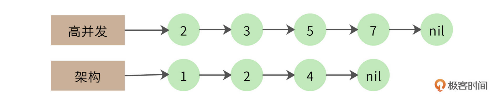
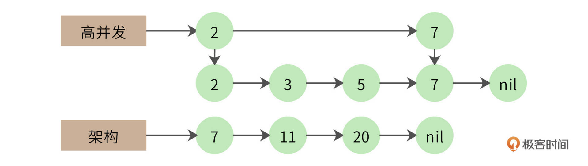

- 00 开篇词 “附身”大厂架构师，身临其境设计高并发系统.md
- 01 软件建模与文档：架构师怎样绘制系统架构蓝图？.md
- 02 高并发架构设计方法：面对高并发，怎么对症下药？.md
- 03 短 URL 生成器设计：百亿短 URL 怎样做到无冲突？.md
- 04 网页爬虫设计：如何下载千亿级网页？.md
- 05 网盘系统设计：万亿 GB 网盘如何实现秒传与限速？.md
- 06 短视频系统设计：如何支持三千万用户同时在线看视频？.md
- 07 海量数据处理技术回顾：为什么分布式会遇到 CAP 难题？.md
- 08 秒杀系统设计：你的系统可以应对万人抢购盛况吗？.md
- 09 交友系统设计：哪种地理空间邻近算法更快？.md
- 10 搜索引擎设计：信息搜索怎么避免大海捞针？.md
- 11 反应式编程框架设计：如何使方法调用无阻塞等待？.md
- 12 高性能架构的三板斧：分析系统性能问题从哪里入手？.md
- 13 微博系统设计：怎么应对热点事件的突发访问压力？.md
- 14 百科应用系统设计：机房被火烧了系统还能访问吗？.md
- 15 限流器设计：如何避免超预期的高并发压力压垮系统？.md
- 16 高可用架构的十种武器：怎么度量系统的可用性？.md
- 17 Web 应用防火墙：怎样拦截恶意用户的非法请求？.md
- 18 加解密服务平台：如何让敏感数据存储与传输更安全？.md
- 19 许可型区块链重构：无中心的区块链怎么做到可信任？.md
- 20 网约车系统设计：怎样设计一个日赚 5 亿的网约车系统？.md
- 21 网约车系统重构：如何用 DDD 重构网约车系统设计？.md
- 22 大数据平台设计：如何用数据为用户创造价值？.md
- 结束语 一个架构师的一天.md
10 搜索引擎设计：信息搜索怎么避免大海捞针？
你好，我是李智慧。
在[04讲]中，我们讨论了大型分布式网络爬虫的架构设计，但是网络爬虫只是从互联网获取信息，海量的互联网信息如何呈现给用户，还需要使用搜索引擎完成。因此，我们准备开发一个针对全网内容的搜索引擎，产品名称为“Bingoo”。
Bingoo的主要技术挑战包括：
- 针对爬虫获取的海量数据，如何高效地进行数据管理；
- 当用户输入搜索词的时候，如何快速查找包含搜索词的网页内容；
- 如何对搜索结果的网页内容进行排序，使排在搜索结果列表前面的网页，正好是用户期望看到的内容。
概要设计
一个完整的搜索引擎包括分布式爬虫、索引构造器、网页排名算法、搜索器等组成部分，Bingoo的系统架构如下。

分布式爬虫通过存储服务器将爬取的网页存储到分布式文件集群HDFS，为了提高存储效率，网页将被压缩后存储。存储的时候，网页一个文件挨着一个文件地连续存储，存储格式如下。

每个网页被分配得到一个8字节长整型docID，docID之后用2个字节记录网页的URL的长度，之后4个字节记录压缩后网页内容数据的长度，所有存储的网页的头14个字节都是同样的格式。之后存储URL字符串和压缩后的网页内容数据。读取文件的时候，先读14个字节的头信息，根据头信息中记录的URL长度和数据长度，再读取对应长度的URL和网页内容数据。
搜索引擎能够快速查找的核心就是利用索引，根据用户的查询内容查找匹配的索引，根据索引列表构建结果页面。索引的构造主要通过索引构造器完成，索引构造器读取HDFS中的网页内容，解压缩后提取网页中的单词，构建一个“docID->单词列表”的正排索引。然后，索引构造器再根据这个正排索引构建一个“单词->docID列表”的倒排索引，“docID列表”就是包含了这个单词的所有网页列表。利用这个倒排索引，搜索器可以快速获得用户搜索词对应的所有网页。
网页中所有的单词构成了一个词典，实际上，词典就是一个Hash表，key就是单词，value就是倒排索引的网页列表。虽然互联网页的内容非常庞大，但是使用到的单词其实是非常有限的。根据Google的报告，256M内存可以存放1400万个单词，这差不多就是英文单词的全部了。
在构建索引的过程中，因为要不断修改索引列表，还要进行排序，所以，有很多操作是需要进行加锁同步完成的。对于海量的互联网页的计算，这样的索引构建速度太慢了。因此我们设计了64个索引桶，根据docID取模，将不同网页分配到不同的桶中，在每个桶中分别进行索引构建，通过并行计算来加快索引处理速度。
索引构造器在读取网页内容、构造索引的时候，还会调用URL提取器，将网页中包含的URL提取出来，构建一个链接关系表。链接关系表的格式是“docID->docID”，前一个docID是当前网页的docID，后一个docID是当前网页中包含的URL对应的docID。一个网页中会包含很多个URL，也就是会构建出很多个这样的链接关系。后面会利用这个链接关系表，使用PageRank排名算法对所有网页进行打分排名，当索引器得到查找的网页列表时，利用PageRank值进行排名，最终呈现给用户，保证用户最先看到的网页是最接近用户期望的结果页面。
详细设计
一个运行良好的搜索引擎的核心技术就是索引和排名，所以我们将分别说明这两种技术要点。
索引
索引构造器从HDFS读取网页内容后，解析每个页面，提取网页里的每个单词。如果是英文，那么每个单词都用空格分隔，比较容易；如果是中文，需要使用中文分词器才能提取到每个单词，比如“高并发架构”，使用中文分词器得到的就是“高并发”、“架构”两个词。
首先，索引构造器将所有的网页都读取完，构建出所有的“docID->单词列表”正排索引。

然后遍历所有的正排索引，再按照“单词→docID列表”的方式组织起来，就是倒排索引了。
我们这个例子中只有两个单词、7个网页。事实上，Bingoo数以千亿的网页就是这样通过倒排索引组织起来的，网页数量虽然庞大，但是单词数却是比较有限的。所以，整个倒排索引的大小相比于网页数量要小得多。Bingoo将每个单词对应的网页列表存储在硬盘中，而单词则存储在内存的Hash表，也就是词典中，词典示例：
对于部分热门的单词，整个网页列表也可以存储在内存中，相当于缓存。在词典中，每个单词记录下硬盘或者内存中的网页列表地址，这样只要搜索单词，就可以快速得到对应的网页地址列表。Bingoo根据列表中的网页编号docID，展示对应的网页信息摘要，就完成了海量数据的快速检索。
如果用户的搜索词正好是一个单词，比如“高并发”，那么直接查找词典，得到网页列表就完成查找了。但是如果用户输入的是一个句话，那么搜索器就需要将这句话拆分成几个单词，然后分别查找倒排索引。这样的话，得到的就是几个网页列表，还需要对这几个网页列表求交集，才能得到最终的结果列表。
比如，用户输入“高并发架构”进行搜索，那么搜索器就会拆分成两个词：“高并发”、“架构”，得到两个倒排索引：
高并发->2,3,5,7
架构->1,2,4
需要对这两个倒排索引求交集，也就是同时包含“高并发”和“架构”的网页才是符合搜索要求的结果，最终的交集结果应该是只有一篇网页，即docID为2的满足要求。
列表求交集最简单的实现就是双层for循环，但是这种算法的时间复杂度是O(n^2)，我们的网页列表长度（n）可能有千万级甚至更高，这样的计算效率太低。
一个改进的算法是拉链法，我们将网页列表先按照docID的编号进行排序，得到的就是这样两个有序链表：

同时遍历两个链表，如果其中一个链表当前指向的元素小于另一个链表当前指向的元素，那么这个链表就继续向前遍历；如果两个链表当前指向的元素相同，该元素就是交集元素，记录在结果列表中；依此继续向前遍历，直到其中一个链表指向自己的尾部nil。
拉链法的时间复杂度是O(2n)，远优于双层循环。但是对于千万级的数据而言，还是太慢。我们还可以采用数据分片的方式进行并行计算，以实现性能优化。
比如，我们的docID分布在[0, 1万亿)区间，而每个倒排索引链表平均包含1千万个docID。我们把所有的docID按照1千亿进行数据分片，就会得到10个区间[0, 1千亿)[1千亿，2千亿)……[9千亿，1万亿)。每个倒排索引链表大致均匀分布在这10个区间，我们就可以依照这10个区间范围，将每个要遍历的链表切分为10片，每片大约包含1百万个docID。两个链表只在自己对应的分片内求交集即可，因此我们可以启动10个线程对10个分片进行并行计算，速度可提高10倍。
事实上，两个1千万长度的链表求交集，最终的结果可能不过几万，也就是说，大部分的比较都是不相等的。比如下面的例子。

第一个链表遍历到自己的最后一个元素，才和第二个链表的第一个元素相同。那么第一个链表能不能跳过前面那些元素呢？很自然，我们想到可以用跳表来实现，如下图。

跳表实际上是在链表上构建多级索引，在索引上遍历可以跳过底层的部分数据，我们可以利用这个特性实现链表的跳跃式比较，加快计算速度。使用跳表的交集计算时间复杂度大约是O(log(n))。
此外，虽然搜索引擎利用倒排索引已经能很快得到搜索结果了，但搜索引擎应用还会使用缓存对搜索进行加速，将整个搜索词对应的搜索结果直接放入缓存，以减少倒排索引的访问压力，以及不必要的集合计算。
PageRank排名算法
Bingoo使用PageRank算法进行网页结果排名，以保证搜索结果更符合用户期待。
PageRank算法会根据网页的链接关系给网页打分。如果一个网页A包含另一个网页B的超链接，那么就认为A网页给B网页投了一票。一个网页得到的投票越多，说明自己越重要；越重要的网页给自己投票，自己也越重要。
PageRank算法就是计算每个网页的PageRank值，最终的搜索结果也是以网页的PageRank值排序，展示给用户。事实证明，这种排名方法非常有效，PageRank值更高的网页，确实更满足用户的搜索期望。
以下面四个网页A、B、C、D举例，带箭头的线条表示链接。
B网页包含了A、D两个页面的超链接，相当于B网页给A、D每个页面投了一票，如果初始的时候，所有页面都是1分，那么经过这次投票后，B给了A和D每个页面1/2分（B包含了A、D两个超链接，所以每个投票值1/2分），自己从C页面得到1/3分（C包含了A、B、D三个页面的超链接，每个投票值1/3分）。
而A页面则从B、C、D分别得到1/2，1/3，1分。用公式表示就是
$\small PR（A） = \frac{PR（B）}{2}+\frac{PR（C）}{3}+\frac{PR（D）}{1}$
等号左边是经过一次投票后，A页面的PageRank分值；等号右边每一项的分子是包含A页面超链接的页面的PageRank分值，分母是该页面包含的超链接数目。
这样经过一次计算后，每个页面的PageRank分值就会重新分配，重复同样的算法过程，经过几次计算后，根据每个页面PageRank分值进行排序，就得到一个页面重要程度的排名表。根据这个排名表，将用户搜索出来的网页结果排序，排在前面的通常也正是用户期待的结果。
但是这个算法还有个问题，如果某个页面只包含指向自己的超链接，其他页面不断给它送分，而自己一分不出，随着计算执行次数越多，它的分值也就越高，这显然是不合理的。这种情况就像下图所示的，A页面只包含指向自己的超链接。

解决方案是，设想浏览一个页面的时候，有一定概率不是点击超链接，而是在地址栏输入一个URL访问其他页面，表示在公式上，就是
$\small PR（A） = \alpha(\frac{PR（B）}{2}+\frac{PR（C）}{3}+\frac{PR（D）}{1})+\frac{（1-\alpha）}{4}$
上面$\small （1-\alpha）$就是跳转到其他任何页面的概率，通常取经验值0.15(即$\small \alpha$ 为0.85)，因为有一定概率输入的URL是自己的，所以加上上面公式最后一项，其中分母4表示所有网页的总数。
那么对于N个网页，任何一个页面$\small P_{i}$的PageRank计算公式如下：
$\small PageRank（P_{i}）=\alpha \sum_{P_{j}\in M(P_{i})}^{}{\frac{PageRank(P_{j})}{L(P_{j})}} + \frac{1-\alpha}{N}$
公式中，$\small P_{j}\in M(P_{i})$ 表示所有包含有$\small P_{i}$超链接的$\small P_{j}$，$\small L(P_{j})$表示$\small P_{j}$页面包含的超链接数，N表示所有的网页总和。由于Bingoo要对全世界的网页进行排名，所以这里的N是一个万亿级的数字。
计算开始的时候，将所有页面的PageRank值设为1，带入上面公式计算，每个页面都得到一个新的PageRank值。再把这些新的PageRank值带入上面的公式，继续得到更新的PageRank值，如此迭代计算，直到所有页面的PageRank值几乎不再有大的变化才停止。
小结
PageRank算法我们现在看起来平平无奇，但是正是这个算法造就了Google近2万亿美元的商业帝国。在Google之前，Yahoo已经是互联网最大的搜索引擎公司。按照一般的商业规律，如果一个创新公司不能带来十倍的效率或者体验提升，就根本没有机会挑战现有的巨头。而Google刚一出现，就给Yahoo和旧有的搜索引擎世界带来摧枯拉朽的扫荡，用户体验的提升不止十倍，这其中的秘诀正是PageRank。
二十几年前，我刚刚接触编程的时候，我们中国也有很多这样的编程英雄，王选、王江民、求伯君、雷军等等，他们几乎凭一己之力就创造出一个行业。正是对这些英雄们的崇拜和敬仰，引领我在编程这条路上一直走下去。软件编程是一个可以创造奇迹的地方，而不只是为了混碗饭吃。梦想不能当饭吃，但是梦想带来的可不止是一碗饭。
思考题
PageRank的计算，需要在万亿级的数据上进行多次迭代计算才能完成。数据量和计算量都非常大，如何完成这样的计算？也就是说，具体编程实现是怎样的？
欢迎在评论区分享你的思考，我们共同进步。
© 2019 - 2023 Liangliang Lee. Powered by Vert.x and hexo-theme-book.